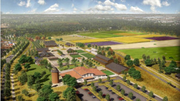

The Beauty of Indiana
In the heart of the Midwest, Indiana boasts a picturesque landscapes. Known for its beauty that captivates visitors and locals alike, it has rolling hills, expansive forests, and serene lakes to roaring rivers, the state offers a beauty unique to its own.
Hoosier National Forest
The Hoosier National Forest is located in southern Indiana. It has over 200,000 acres of pristine wilderness and wildlife. It offers hiking, camping, and is a playground to explore for outdoor enthusiasts.
Indiana Dunes National Park
The Indiana Dunes National Park is just along the southern shore of Lake Michigan. Its holds towering sand dunes, beautiful beaches, and diverse ecosystems. With over 15,000 acers visitors can enjoy swimming, hiking, and bird watching.
Connor Prairie
Connor Prairie is located in Fishers Indiana. Its a living history museum that offers visitors a look into the past. With over 1,000 acres it has interactive exhibits, historic buildings, and costumed actors showing what life was like in the 18th Century.
Brown County State Park
Brown County State Park, nestled in the rolling hills of southern Indiana. Holding over 15,000 acres of land it offers visitors a range of outdoor fun. Enjoy hiking the picturesque trails, exploring on a mountain bike, or book an unforgettable horse back riding experience. Brown county is a must go destination for anyone who wants to immerse themselves in nature.
Amish Country in Shipshewana
Amish Country in Shipshewana, Indiana, offers visitors a glimpse into the traditional and peaceful way of life practiced by the Amish community. With quant shops offering handmade goods, and hearty meals prepared at family-owned restaurants, its a great way to spend an afternoon admiring countryside farms with roaming horse-drawn buggies.